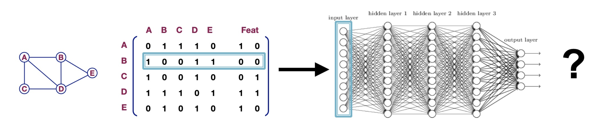
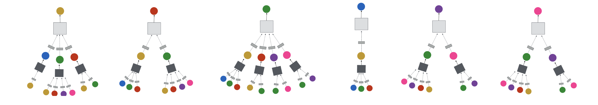
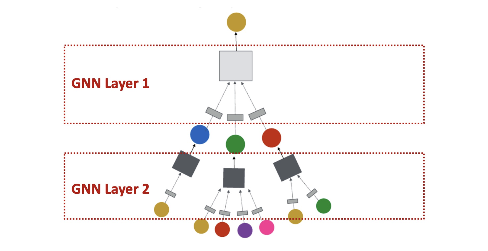
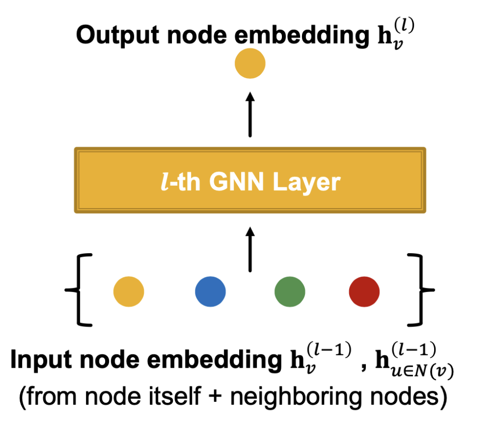
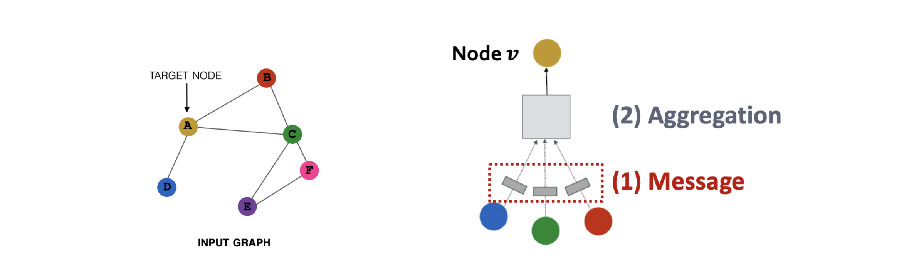
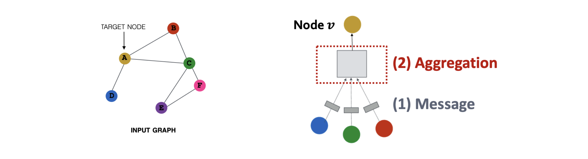
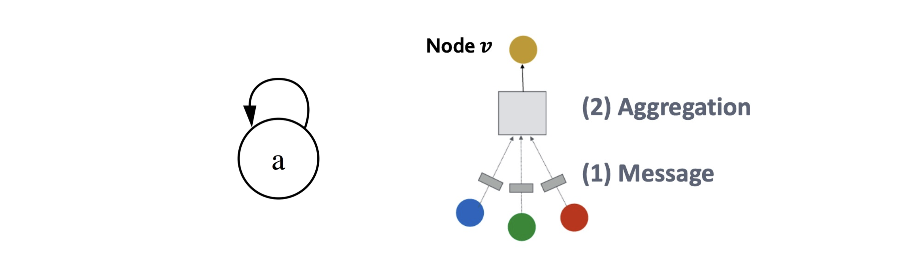

들어가며
이번 강의는 지난 시간에 다룬 그래프 표현 학습(Graph Representation Learning) 의 핵심 방법론인 DeepWalk와 Node2vec를 복습하는 것에서 출발합니다. 그리고 이들 방법이 공유하는 Shallow Encoder 구조의 세 가지 근본적 한계를 명확히 짚은 뒤, 그 한계를 극복하기 위한 그래프 신경망(Graph Neural Network, GNN) 의 설계 원리를 단계적으로 전개합니다.
강의의 전체 구성은 다음 세 파트로 이루어져 있습니다.
- Deep Learning on Graphs: 문제를 재정의하고 Naive approach의 한계를 확인합니다.
- Graph Neural Networks: 계산 그래프(Computation Graph) 아이디어를 기반으로 기본 GNN을 구성하고 행렬 형식으로 정리합니다.
- GNN Layers: Message–Aggregation–Update 일반 프레임워크와 GCN·GraphSAGE 아키텍처를 다룹니다.
Recap: 그래프 표현 학습 (Graph Representation Learning)
핵심 목표
그래프 표현 학습의 목표는 원본 그래프의 구조적 속성을 보존하는 노드 임베딩(node embedding) 을 생성하는 것입니다. 구체적으로, 원본 네트워크에서 유사한 두 노드 \(u\)와 \(v\)는 임베딩 공간에서도 가까이 위치해야 합니다.
\[\text{similarity}(u, v) \approx \mathbf{z}_v^\top \mathbf{z}_u\]
- 좌변 \(\text{similarity}(u,v)\): 원본 네트워크에서의 유사도 (직접 정의해야 할 설계 선택)
- 우변 \(\mathbf{z}_v^\top \mathbf{z}_u\): 임베딩 공간에서의 내적(dot product) 유사도

이를 위한 핵심 구성 요소는 두 가지입니다.
- 인코더(Encoder): 각 노드 \(v\)를 임베딩 벡터 \(\mathbf{z}_v\)로 변환하는 함수 \(\text{ENC}(v)\)
- 유사도 정의: 원본 그래프에서의 노드 유사도를 어떻게 측정할 것인지 — 이것이 모델 설계의 핵심 선택입니다.
\[\text{goal: } \text{similarity}(u, v) \approx \mathbf{z}_v^\top \mathbf{z}_u\]

Shallow Embeddings의 구조
DeepWalk와 Node2vec에서 인코더는 단순한 임베딩 룩업(embedding look-up) 입니다. 노드 인덱스를 입력받아 해당 열(column)을 임베딩 행렬에서 직접 조회합니다.
\[\text{ENC}(v) = \mathbf{Z} \cdot \mathbf{v}\]
- \(\mathbf{Z} \in \mathbb{R}^{d \times |V|}\): 임베딩 행렬 — 각 열이 하나의 노드에 대응
- \(\mathbf{v}\): 노드 \(v\)를 가리키는 인디케이터 벡터(one-hot)
- \(d\): 임베딩 차원(dimension/size)

Shallow Encoder의 세 가지 한계
Shallow Encoder 방식은 세 가지 근본적인 한계를 가집니다.
- 한계 1 — 파라미터 비효율성
- 총 \(O(|V| \times d)\)개의 파라미터가 필요합니다.
- 노드 간 파라미터 공유가 없습니다. 모든 노드가 각자 독립적인 임베딩 벡터를 보유합니다.
- 그래프 크기 \(|V|\)가 커질수록 메모리·계산 비용이 선형적으로 증가합니다.
- 한계 2 — Transductive 방식: 귀납적(Inductive) 적용 불가
- 훈련 중에 보지 못한 노드에 대한 임베딩을 생성할 수 없습니다.
- 새로운 노드가 추가되면 임베딩 행렬 전체를 다시 학습해야 합니다.
- 테스트 시에 그래프 구조가 변할 수 있는 동적 환경에 부적합합니다.
- 한계 3 — 노드 특징(feature) 미활용
- 소셜 네트워크의 사용자 프로필, 분자 그래프의 원자 속성 등 많은 실세계 그래프는 풍부한 노드 특징을 갖습니다.
- Shallow Encoder는 이러한 특징 정보를 전혀 활용하지 않습니다.
Part 1. Deep Learning on Graphs
인코더 재정의 (Encoder Definition)
앞서 언급한 한계들을 넘어서기 위해, 보다 일반적인 인코더를 정의합니다.
입력:
- 그래프 \(G = (V, E)\)
- 인접 행렬(Adjacency matrix): \(A \in \{0,1\}^{N \times N}\) — 노드 간 연결 관계를 나타내는 이진 행렬
- 노드 특징 행렬(Node feature matrix): \(X \in \mathbb{R}^{N \times f_{\text{in}}}\) — 각 노드의 초기 특징 벡터
- 예: 소셜 네트워크의 사용자 프로필, 이미지 노드의 픽셀값, 분자 그래프의 원자 타입
출력:
- \(Z \in \mathbb{R}^{N \times d}\) — 각 노드의 \(d\)차원 임베딩 행렬
핵심: 인코더 \(E_\theta\)는 \(A\)와 \(X\) 모두를 입력으로 받아 \(Z\)를 출력하며, \(Z\)의 내부 구조에 대한 별도 제약은 없습니다.
Deep Graph Encoder
목표: 그래프를 위한 신경망을 인코더로 설계합니다.
\[\text{ENC}(v) = \underbrace{\text{그래프 구조에 기반한 비선형 변환의 다층 구조}}_{\text{Graph Neural Network (GNN)}}\]
이 접근법의 잠재적 장점은 다음 세 가지입니다.
- 파라미터 공유: 레이어별 가중치 행렬을 모든 노드가 공유하여 파라미터 수를 대폭 줄입니다.
- 귀납적(Inductive) 적용 가능: 훈련 중 보지 못한 새로운 노드에도 동일한 레이어를 적용하여 임베딩을 생성할 수 있습니다.
- 노드 특징 활용: \(X\)를 자연스럽게 입력으로 포함합니다.
이 아키텍처를 그래프 신경망(Graph Neural Network, GNN) 이라 부릅니다.

현대 딥러닝 도구 상자와 그래프의 차이
현대 딥러닝은 두 가지 규칙적인 데이터 구조에 최적화되어 있습니다.
- 시퀀스(Sequences): 텍스트, 음성 → RNN / Transformer
- 격자(Grids): 이미지 → CNN

반면, 그래프 구조 데이터는 훨씬 복잡합니다.
- 임의의 크기와 복잡한 위상(topology): 노드 수가 가변적이고, 이웃 관계가 불규칙합니다.
- 고정된 노드 순서 없음(No fixed node ordering): 노드 \((1,2,3)\)으로 구성된 그래프 \(G\)와 노드 \((1,3,2)\)로 구성된 \(G'\)는 동일한 그래프입니다.
- 따라서 모델은 순열 불변성(permutation invariance) 을 만족해야 합니다.

Part 2. Graph Neural Networks
Naïve Approach와 그 문제점
가장 단순한 접근법은 인접 행렬 \(A\)와 특징 행렬 \(X\)를 이어 붙여(concatenate) MLP에 입력하는 것입니다.
\[\text{output} = \text{MLP}(A \| X)\]
그러나 이 방식은 두 가지 결정적인 문제를 갖습니다.
- 크기 비일관성: 노드 수 \(N\)이 다른 그래프에는 동일한 모델을 적용할 수 없습니다. 입력 차원이 \(N^2 + N \cdot f_\text{in}\)으로 \(N\)에 종속되기 때문입니다.
- 순열 비불변성: 동일한 그래프라도 노드 순서가 달라지면 \(A\)의 행·열 배치가 바뀌어 완전히 다른 입력이 됩니다.

핵심 아이디어: 계산 그래프 (Computation Graph)
GNN의 핵심 아이디어는 다음과 같습니다.
각 노드의 이웃이 그 노드의 계산 그래프를 정의한다.
GNN은 이 계산 그래프를 따라 정보를 전파(propagate) 하고 변환(transform) 하는 방법을 학습합니다.
- 왼쪽(Determine node computation graph): 각 노드를 루트로 하는 이웃 집합(k=1, k=2 hop)을 정의합니다.
- 오른쪽(Propagate and transform information): 이 구조를 따라 각 레이어에서 집계자(aggregator)가 이웃 정보를 집계·변환합니다.

계산 그래프의 트리 구조
\(h_v^{(l)}\)을 레이어 \(l\)에서 노드 \(v\)의 은닉 표현(hidden representation) 이라 합니다.
- 레이어 \(l\)에서의 표현은, 레이어 \(l-1\)에서의 자신 및 이웃들의 표현으로부터 계산됩니다.
\[h_A^{(l)} \leftarrow \text{집계}\!\left(h_A^{(l-1)},\; h_B^{(l-1)},\; h_C^{(l-1)},\; h_D^{(l-1)}\right)\]
이 재귀적 집계 구조는 트리 구조를 형성합니다. 목표 노드 \(A\)를 루트로 하는 계산 트리를 전개하면, 각 레이어에서 이웃들의 이웃이 새로운 리프(leaf) 노드로 추가됩니다.

그래프 내 모든 노드는 동시에(병렬로) 각자의 이웃에 기반한 계산 그래프를 정의합니다.

심층 GNN: 계층별 수용 범위
GNN은 임의의 깊이를 가질 수 있으며, \(k\)번째 레이어는 \(k\)-hop 이웃의 정보를 포착합니다.
레이어-0 임베딩: 노드 \(u\)의 초기 표현은 그 노드의 입력 특징
\[h_u^{(0)} = x_u\]
레이어-\(k\) 임베딩: \(k\)-hop 이웃으로부터의 정보를 포함
\[h_u^{(k)} \leftarrow \text{집계}\!\left(\left\{h_w^{(k-1)} \mid w \in N(u)\right\}\right)\]

집계 함수 (Aggregation Function)
이웃 집계(Neighborhood Aggregation) 는 GNN의 핵심 구성 요소입니다. 이웃 노드들의 표현 집합(set) 을 하나의 새로운 표현으로 변환하는 함수입니다.
\[\hat{h}_v^{(l)} = \text{AGG}^{(l)}\!\left(\left\{h_u^{(l-1)} \mid u \in N(v)\right\}\right)\]
“계산 그래프의 박스 안에 무엇이 들어있는가(What is in the box?)”라는 물음이 바로 어떤 집계 함수를 사용할 것인지의 설계 문제입니다.

기본 GNN 레이어 업데이트
기본 GNN 레이어는 이웃의 메시지를 변환(transform)하고 평균(average) 합니다.
초기화:
\[h_v^{(0)} = x_v\]
레이어 업데이트 규칙 (\(l = 0, 1, \ldots, L-1\)):
\[h_v^{(l+1)} = \sigma\!\left(\frac{1}{|N(v)|}\sum_{u \in N(v)} W^{(l)}\, h_u^{(l)} + B^{(l)}\, h_v^{(l)}\right)\]
각 항목의 역할:
| 기호 | 역할 |
|---|---|
| \(W^{(l)}\) | 이웃 집계 가중치 행렬 |
| \(B^{(l)}\) | 자기 자신 변환 가중치 행렬 |
| \(\frac{1}{\|N(v)\|}\) | 이웃 수로 정규화 (평균) |
| \(\sigma\) | 비선형 활성화 함수 (예: ReLU, Sigmoid) |
최종 임베딩:
\[z_v = h_v^{(L)}\]
여기서 \(L\)은 GNN의 총 레이어 수입니다. \(h_v^{(l+1)}\)은 \(h_v^{(l)}\)과 차원이 달라도 무방합니다.
기본 GNN의 세 단계 해석
위 업데이트 규칙은 다음 세 단계로 해석할 수 있습니다.
- Step 1 (Transform): 이전 레이어의 이웃 표현을 선형 변환합니다. \[W^{(l)}\, h_u^{(l)}\]
- Step 2 (Aggregate): 변환된 이웃 메시지들의 평균을 냅니다. \[\frac{1}{|N(v)|}\sum_{u \in N(v)} W^{(l)}\, h_u^{(l)}\]
- Step 3 (Activate): 자기 변환과 합산 후 비선형 활성화 함수 \(\sigma\)를 적용합니다.
학습 방법 (Training)
GNN 파라미터 \(\theta = \{W^{(l)}, B^{(l)}\}_{l=0}^{L-1}\)은 SGD 계열 알고리즘으로 다음 목적 함수를 최소화하도록 학습됩니다.
비지도 학습 (Unsupervised Learning):
레이블 없이 그래프 구조만을 감독 신호로 활용합니다. Random walk 기반 목적 함수:
\[\theta^* = \arg\min_\theta \sum_{v} -\log \sigma\!\left(\mathbf{z}_v^\top \mathbf{z}_u\right)\]
여기서 \((v, u)\)는 random walk 상에서 함께 등장한 노드 쌍입니다.
지도 학습 (Supervised Learning):
노드 분류(node classification) 등 레이블이 있는 태스크에 활용합니다.
\[\theta^* = \arg\min_\theta \sum_{v} \mathcal{L}\!\left(y_v,\; f(z_v)\right)\]
여기서 \(y_v\)는 노드 \(v\)의 레이블이고, \(f\)는 임베딩을 레이블 공간으로 매핑하는 분류기입니다.
행렬 형식 (Matrix Formulation)
실제 구현에서는 모든 노드를 동시에 업데이트하기 위해 행렬 형태로 표현합니다. 딥러닝 라이브러리의 최적화된 행렬 연산을 활용할 수 있습니다.
기본 GNN 레이어의 행렬 표현:
\[H^{(l+1)} = \sigma\!\left(D^{-1} A\, H^{(l)} W^{(l)} + H^{(l)} B^{(l)}\right)\]
각 항목의 설명:
| 기호 | 차원 | 역할 |
|---|---|---|
| \(H^{(l)}\) | \(\mathbb{R}^{N \times d^{(l)}}\) | 레이어 \(l\)의 모든 노드 표현 (행: 노드, 열: 특징) |
| \(W^{(l)}\) | \(\mathbb{R}^{d^{(l)} \times d^{(l+1)}}\) | 이웃 집계 가중치 행렬 |
| \(B^{(l)}\) | \(\mathbb{R}^{d^{(l)} \times d^{(l+1)}}\) | 자기 변환 가중치 행렬 |
| \(A\) | \(\mathbb{R}^{N \times N}\) | 인접 행렬 |
| \(D\) | \(\mathbb{R}^{N \times N}\) | 대각 차수 행렬, \(D_{ii} = \sum_j A_{ij}\) |
| \(D^{-1}A\) | \(\mathbb{R}^{N \times N}\) | 정규화된 인접 행렬 \(\tilde{A}\) |
행렬 형식에서도 세 단계가 동일하게 대응됩니다.
- Step 1: \(H^{(l)} W^{(l)}\) — 모든 노드의 특징을 선형 변환
- Step 2: \(D^{-1}A \cdot \left(H^{(l)} W^{(l)}\right)\) — 정규화된 인접 행렬로 이웃 평균 계산
- Step 3: \(\sigma(\cdots)\) — 비선형성 적용
MLP와의 비교 (Comparison with MLP)
기본 GNN을 MLP와 나란히 비교해 보겠습니다.
MLP (Multi-Layer Perceptron):
\[H^{(l+1)} = \sigma\!\left(W^{(l)} H^{(l)}\right)\]
GNN:
\[H^{(l+1)} = \sigma\!\left(\underbrace{D^{-1}A}_{\tilde{A}}\, H^{(l)} W^{(l)} + H^{(l)} B^{(l)}\right)\]
두 수식의 차이는 정규화된 인접 행렬 \(\tilde{A} = D^{-1}A\) 의 존재 여부입니다.
- \(\tilde{A}\)는 이웃 표현들을 집계하여 새로운 표현을 계산하는 역할을 합니다.
- \(\tilde{A}\)가 없으면 (즉, \(A = I\)이면) 각 노드는 자기 자신의 정보만 변환하는 단순 MLP가 됩니다.
- 결론적으로, GNN은 MLP의 그래프로의 자연스러운 확장입니다.
파라미터 수 비교 (Number of Parameters)
| 방법 | 파라미터 수 | 비고 |
|---|---|---|
| Shallow Encoder (DeepWalk) | \(O(\|V\| \cdot d)\) | 노드마다 별도 임베딩 |
| GNN | \(O(L \cdot d^2 + d \cdot f_{\text{in}})\) | 레이어별 가중치 공유 |
- \(L\): GNN 레이어 수
- \(d\): 각 레이어의 차원 (모든 레이어 동일 가정)
- \(f_\text{in}\): 입력 노드 특징의 차원
- 핵심: GNN의 파라미터 수는 노드 수 \(|V|\)에 독립적입니다.
- 단, 노드 특징을 원-핫 인코딩으로 표현하면 \(f_\text{in} = |V|\)가 되어 두 방식의 파라미터 수가 유사해집니다.
Part 3. GNN Layers
GNN 레이어의 역할
GNN 레이어는 GNN의 핵심 빌딩 블록입니다.
- 레이어 수가 GNN의 표현력을 결정합니다.
- \(L\)-레이어 GNN은 각 노드에 대해 \(L\)-hop 이웃을 고려합니다.
- 2-레이어 GNN의 노드 \(v\) 임베딩에는 최대 2홉 거리 이웃의 정보가 담깁니다.

각 레이어의 구성 요소
GNN 레이어는 벡터 집합을 하나의 벡터로 변환하는 함수입니다. 세 단계로 구성됩니다.
- Message (메시지): 각 벡터를 변환합니다.
- Aggregation (집계): 메시지들을 집계합니다.
- Update (업데이트): 표현을 업데이트합니다.
레이어의 입출력 구조는 다음과 같습니다.
- 입력: 이전 레이어의 노드 자신 표현 \(h_v^{(l-1)}\)과 이웃 표현 집합 \(\{h_u^{(l-1)}\}_{u \in N(v)}\)
- 출력: 현재 레이어의 노드 표현 \(h_v^{(l)}\)

Step 1: 메시지 (Message)
메시지 함수는 각 이웃 노드가 전달할 메시지를 생성합니다.
\[m_u^{(l)} = \text{MSG}^{(l)}\!\left(h_u^{(l-1)}\right)\]
직관: 각 노드가 이웃에 전달할 메시지 벡터를 만듭니다.
대표 예시 — 선형 레이어:
\[m_u^{(l)} = W^{(l)}\, h_u^{(l-1)}\]

Step 2: 집계 (Aggregation)
집계 함수는 이웃으로부터 온 메시지들을 하나로 합칩니다.
\[\hat{h}_v^{(l)} = \text{AGG}^{(l)}\!\left(\left\{m_u^{(l)} \mid u \in N(v)\right\}\right)\]
- 직관: 노드 \(v\)의 이웃들로부터 온 메시지를 집계합니다.
- 예시: 원소별 합산(\(\sum\)), 평균(\(\text{mean}\)), 최댓값(\(\max\)) 연산자
- 핵심 조건: 순열 불변 함수(permutation-invariant function) 이어야 합니다. 이웃들의 순서가 바뀌어도 결과가 동일해야 합니다.

Step 3: 업데이트 / Self-Connection
업데이트 함수는 집계된 이웃 정보와 자기 자신의 이전 표현을 결합합니다.
\[h_v^{(l)} = \text{UPDATE}^{(l)}\!\left(\hat{h}_v^{(l)},\; h_v^{(l-1)}\right)\]
- 직관: Self-connection — 집계된 이웃 정보만으로는 노드 자신의 정보가 덮어씌워질 수 있으므로, \(h_v^{(l-1)}\)을 함께 고려하여 정보 손실을 방지합니다.
- ReLU 등의 활성화 함수가 이 단계에 포함됩니다.

일반 프레임워크 (General Framework)
세 단계를 통합하면, GNN 레이어의 일반 프레임워크는 다음과 같습니다.
\[\boxed{ \begin{aligned} &\textbf{Message:} \quad m_u^{(l)} = \text{MSG}^{(l)}\!\left(h_u^{(l-1)}\right), \quad u \in N(v) \\[6pt] &\textbf{Aggregation:} \quad \hat{h}_v^{(l)} = \text{AGG}^{(l)}\!\left(\left\{m_u^{(l)} \mid u \in N(v)\right\}\right) \\[6pt] &\textbf{Update:} \quad h_v^{(l)} = \text{UPDATE}^{(l)}\!\left(\hat{h}_v^{(l)},\; h_v^{(l-1)}\right) \end{aligned} }\]
이 세 구성 요소의 구체적인 설계 방식에 따라 다양한 GNN 아키텍처가 정의됩니다.
- GCN (Graph Convolutional Network)
- GraphSAGE (Graph Sample and Aggregate)
- GAT (Graph Attention Network)
- GIN (Graph Isomorphism Network)
GNN 아키텍처: GraphSAGE와 GCN
GraphSAGE
GraphSAGE(Graph SAmple and aggreGatE) 는 가장 널리 쓰이는 GNN 아키텍처 중 하나입니다.
\[h_v^{(l)} = \sigma\!\left(W^{(l)} \cdot \text{CONCAT}\!\left(h_v^{(l-1)},\; \text{AGG}\!\left(\left\{h_u^{(l-1)} \mid u \in N(v)\right\}\right)\right)\right)\]
설계 특징
CONCAT 기반 업데이트: 자신의 이전 표현 \(h_v^{(l-1)}\)과 이웃 집계 결과를 이어 붙인(concatenate) 뒤 가중치 행렬 \(W^{(l)}\)을 적용합니다.
- CONCAT 후 단일 \(W^{(l)}\)을 적용하는 방식은, 자기 자신용 가중치(self-transformation)와 이웃용 가중치(neighbor-aggregation)를 별도로 모델링하는 것과 등가입니다.
\[W^{(l)} \cdot \begin{bmatrix} h_v^{(l-1)} \\ \text{AGG}(\cdots) \end{bmatrix} = \underbrace{W_{\text{self}}^{(l)} h_v^{(l-1)}}_{\text{자기 변환}} + \underbrace{W_{\text{neigh}}^{(l)} \,\text{AGG}(\cdots)}_{\text{이웃 집계}}\]
즉, \(W^{(l)}\)의 절반은 \(B^{(l)}\)의 역할을, 나머지 절반은 \(W^{(l)}\)의 역할을 수행합니다.
다양한 AGG 선택지: 집계 함수를 유연하게 교체할 수 있습니다.
- \(\text{sum}(\cdot)\): 원소별 합산
- \(\text{mean}(\cdot)\): 원소별 평균
- \(\text{max}(\cdot)\): 원소별 최댓값
Graph Convolutional Network (GCN)
GCN(Graph Convolutional Network) 은 스펙트럴 그래프 이론으로부터 유도된 아키텍처입니다.
\[h_v^{(l)} = \sigma\!\left(\sum_{u \in N(v) \cup \{v\}} \frac{W^{(l)}\, h_u^{(l-1)}}{\sqrt{d_v + 1} \cdot \sqrt{d_u + 1}}\right)\]
여기서 \(d_v = |N(v)|\)는 노드 \(v\)의 차수(degree)입니다.
설계 특징
- Self-loop 통합: \(N(v) \cup \{v\}\)로 자기 자신을 집계에 포함하여, 별도의 Update 단계 없이 self-connection을 집계 단계에 통합합니다.
- 비자명한(non-trivial) 집계 함수: 집계 함수 설계가 단순하지 않습니다. GCN은 두 가지 정규화 방식을 고려합니다.
단순 평균 (Simple Average)
\[\text{AGG}(\cdot) = \sum_{u \in N(v) \cup \{v\}} \frac{1}{d_v + 1}\, W^{(l)}\, h_u^{(l-1)}\]
- 이웃 수 \(d_v + 1\) (자기 자신 포함)로 나누어 평균을 취합니다.
- 한계: 메시지를 보내는 소스 노드 \(u\)의 차수는 고려하지 않습니다.
대칭 정규화 (Symmetric Normalization)
\[\text{AGG}(\cdot) = \sum_{u \in N(v) \cup \{v\}} \frac{1}{\sqrt{d_v + 1} \cdot \sqrt{d_u + 1}}\, W^{(l)}\, h_u^{(l-1)}\]
이 정규화의 직관:
- 고차수 노드의 영향력 조정: 연결이 많은 노드(\(d_u\)가 큰 허브 노드)의 메시지를 더 작게 스케일링합니다. 그래프에서 차수가 높은 노드는 큰 영향력을 가지므로, 이를 양방향으로 조정합니다.
- 소스 노드의 차수도 반영: 타깃 노드 \(v\)의 차수 \(d_v\)뿐 아니라, 메시지를 보내는 소스 노드 \(u\)의 차수 \(d_u\)도 정규화에 포함합니다.
- 이는 인접 행렬의 대칭 정규화 \(\hat{A} = D^{-1/2} A D^{-1/2}\) (self-loop 추가 후)에 대응합니다.
정리 (Summary)
이번 강의의 내용을 세 파트로 요약합니다.
1. Deep Learning on Graphs
- 많은 실제 그래프는 노드 특징(node feature) 을 보유하며, 인코더가 이를 활용해야 합니다.
- Shallow Encoder의 세 한계: 파라미터 비효율, 귀납적 적용 불가(transductive), 노드 특징 미활용.
- Naïve Approach(MLP에 \(A \| X\) 직접 입력)는 크기 불일관성과 순열 비불변성 문제로 사용할 수 없습니다.
2. Graph Neural Networks
- 각 노드의 이웃이 계산 그래프를 정의하며, 레이어가 깊어질수록 더 넓은 이웃의 정보를 포착합니다.
- 기본 GNN의 행렬 형식: \(H^{(l+1)} = \sigma(D^{-1}A\, H^{(l)} W^{(l)} + H^{(l)} B^{(l)})\)
- GNN은 MLP의 그래프로의 자연스러운 확장입니다. 정규화된 인접 행렬 \(\tilde{A} = D^{-1}A\)가 이웃 집계의 역할을 담당합니다.
3. GNN Layers
- 각 GNN 레이어는 Message → Aggregation → Update 세 단계로 구성됩니다.
- GraphSAGE: CONCAT 기반으로 self-transformation과 neighbor-aggregation을 분리 모델링, 다양한 AGG 선택지를 제공합니다.
- GCN: 대칭 정규화 \(\frac{1}{\sqrt{d_v+1}\sqrt{d_u+1}}\) 기반 집계, self-loop를 집계 단계에 통합합니다.